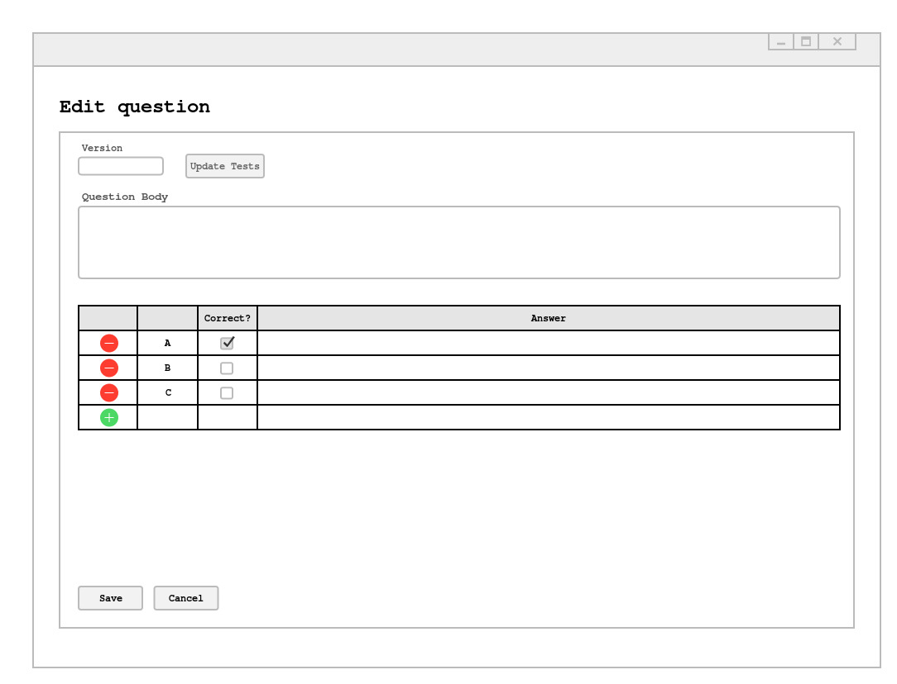

To edit questions, the user chooses the Edit Questions
option from the menu page under the Question Manager
popup menu.

Figure 1: Question Selected For Editing.
Editing a question will update the version which is shown in the "version" field at the top of the form. Clicking on the "update tests" button will update the question in all tests that use the question.